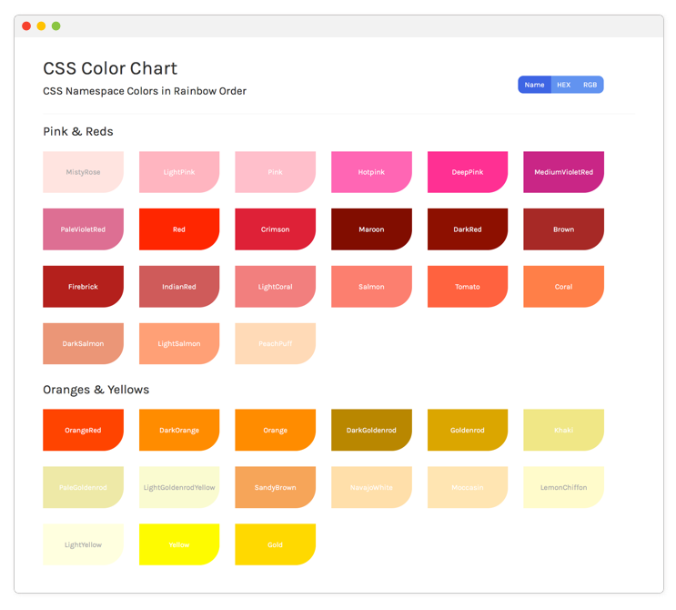

Designer's Portfolio
This beautiful design follows a 'mobile first' approach and responsively grows for the most common devices.visit webapp
Role: developer
Tools: jekyll and sass
Acres
This tool is for aspiring urban farmers to view available city land data.visit webapp
Role: developer
Tools: angularJs and python flask
Color Chart
This is a chart that displays all of the CSS namespace values in rainbow order and allows users to copy the value to their clipboard.visit webapp
Role: developer
Tools: angularJs and flash

Farmers
A tool for farmers to easily update their farmers market offerings and for citizens to see what is available.visit webapp
Role: developer
Tools: twilio and python flask

Make Me Coffee
An iOS calculator which gives you the amount of coffee and water for drip, french press and pour over coffee.visit webapp
Role: developer
Tools: swift and objective-c

Cuadras de Albers
Experimental code-drawing & music project. I drew Josef Albers' 'impossible shapes' with code, colored them with palettes from 'Interaction of Color' and added sound.visit webapp
Role: developer
Tools: twoJs and howlingJs